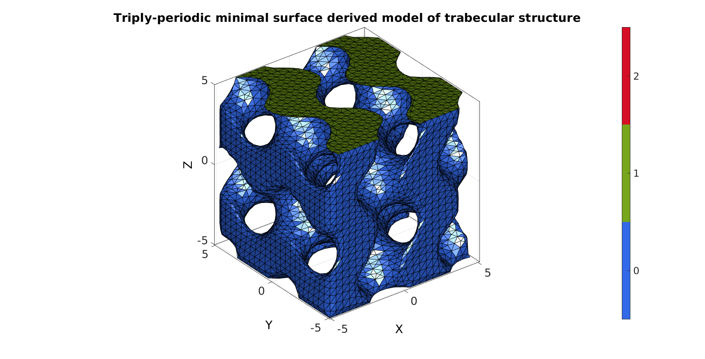
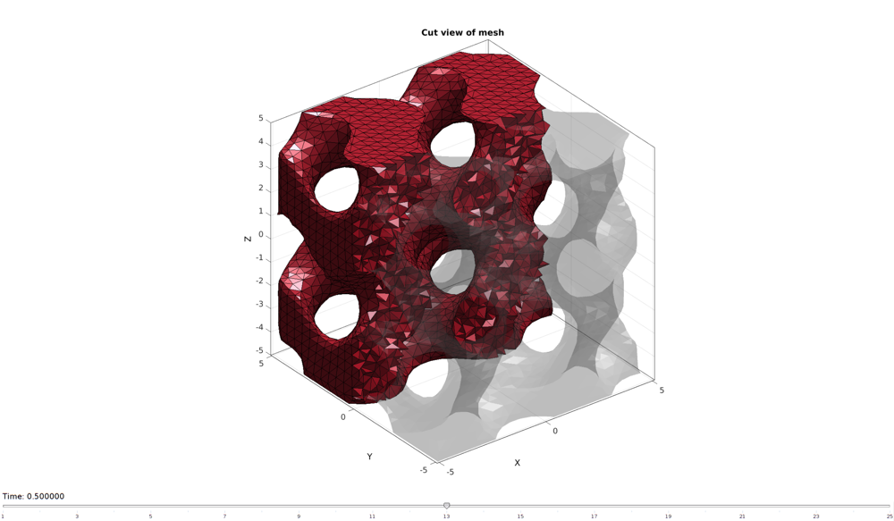
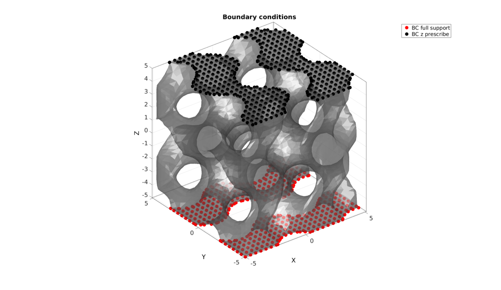
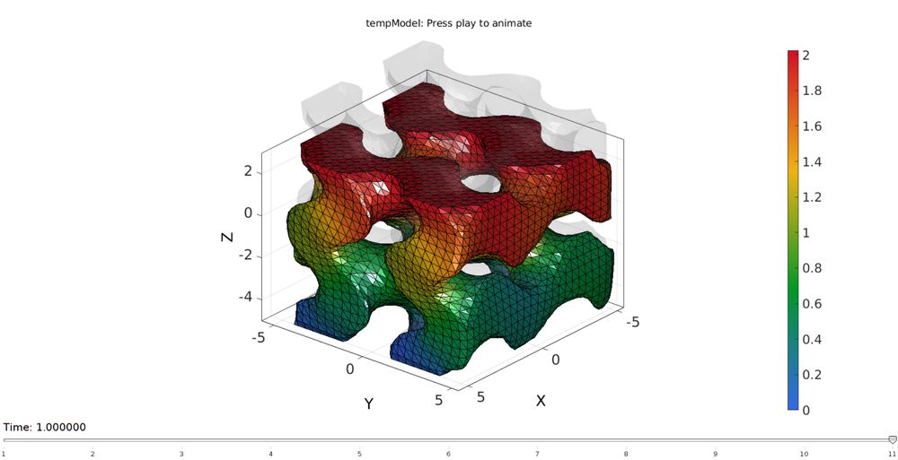

DEMO_febio_0010_trabeculae_compression
Below is a demonstration for:
- Building geometry for trabecular structure with tetrahedral elements
- Defining the boundary conditions
- Coding the febio structure
- Running the model
- Importing and visualizing the displacement and stress results
Contents
- Keywords:
- Plot settings
- Control parameters
- DEFINING GEOMETRY
- Tetrahedral meshing using tetgen (see also runTetGen)
- Visualizing mesh using meshView, see also anim8
- Defining the boundary conditions
- Defining the FEBio input structure
- Quick viewing of the FEBio input file structure
- Exporting the FEBio input file
- Running the FEBio analysis
- Import FEBio results
Keywords:
- febio_spec version 2.5
- febio, FEBio
- compression, tension, compressive, tensile
- displacement control, displacement boundary condition
- trabecular
- tetgen, meshing
- tetrahedral elements, tet4
- static, solid
- hyperelastic, Ogden
- displacement logfile
- Stress logfile
clear; close all; clc;
Plot settings
fontSize=20; faceAlpha1=0.8; markerSize=40; lineWidth=3; markerSize1=25;
Control parameters
% Path names defaultFolder = fileparts(fileparts(mfilename('fullpath'))); savePath=fullfile(defaultFolder,'data','temp'); % Defining file names febioFebFileNamePart='tempModel'; febioFebFileName=fullfile(savePath,[febioFebFileNamePart,'.feb']); %FEB file name febioLogFileName=fullfile(savePath,[febioFebFileNamePart,'.txt']); %FEBio log file name febioLogFileName_disp=[febioFebFileNamePart,'_disp_out.txt']; %Log file name for exporting force febioLogFileName_force=[febioFebFileNamePart,'_force_out.txt']; %Log file name for exporting force porousGeometryCase='g'; ns=12; %Number of voxel steps across period for image data (roughly number of points on mesh period) nPeriods=[2 2 2]; %Number of periods in each direction sampleSize=10; %Heigh of the sample %Define applied displacement appliedStrain=0.2; %Linear strain (Only used to compute applied stretch) loadingOption='compression'; % or 'tension' switch loadingOption case 'compression' stretchLoad=1-appliedStrain; %The applied stretch for uniaxial loading case 'tension' stretchLoad=1+appliedStrain; %The applied stretch for uniaxial loading end displacementMagnitude=(stretchLoad*sampleSize)-sampleSize; %The displacement magnitude %Material parameter set c1=1e-3; %Solid shear-modulus-like parameter m1=2; %Solid material parameter setting degree of non-linearity k=c1; %Solid bulk modulus % FEA control settings numTimeSteps=10; %Number of time steps desired max_refs=15; %Max reforms max_ups=0; %Set to zero to use full-Newton iterations opt_iter=6; %Optimum number of iterations max_retries=5; %Maximum number of retires dtmin=(1/numTimeSteps)/100; %Minimum time step size dtmax=1/numTimeSteps; %Maximum time step size
DEFINING GEOMETRY
The trabecular structure is here simulated using isosurfaces on triply periodic minimal surfaces functions.
switch porousGeometryCase case 'g' %Gyroid n=nPeriods*ns; %Number of sample points isoLevel=0.; %Iso-surface level cutOffset=1/3*pi; %Cut level such that data "ends well" %Define coordinate limits xMin=0*pi; xMax=(xMin+2*pi*nPeriods(1))-cutOffset; yMin=0*pi; yMax=(yMin+2*pi*nPeriods(2))-cutOffset; zMin=0*pi; zMax=(zMin+2*pi*nPeriods(3))-cutOffset; case 'p' %Schwarz P n=nPeriods*ns; %Number of sample points isoLevel=0.; %Iso-surface level %Define coordinate limits xMin=0*pi; xMax=xMin+2*pi*nPeriods(1); yMin=0*pi; yMax=yMin+2*pi*nPeriods(2); zMin=0*pi; zMax=zMin+2*pi*nPeriods(3); case 'd' %Schwarz D n=nPeriods*ns; %Number of sample points isoLevel=0.; %Iso-surface level %Define coordinate limits xMin=0*pi; xMax=xMin+2*pi*nPeriods(1); yMin=0*pi; yMax=yMin+2*pi*nPeriods(2); zMin=0*pi; zMax=zMin+2*pi*nPeriods(3); end %Create coordinates xRange=linspace(xMin,xMax,n(1)); yRange=linspace(yMin,yMax,n(2)); zRange=linspace(zMin,zMax,n(3)); [X,Y,Z]=meshgrid(xRange,yRange,zRange); V=[X(:) Y(:) Z(:)]; %Calculate 3D image data S=triplyPeriodicMinimal(V(:,1),V(:,2),V(:,3),porousGeometryCase); S=reshape(S,size(X)); %Scaling coordinates X=((X./abs(xMax-xMin)).*sampleSize)-sampleSize/2; Y=((Y./abs(yMax-yMin)).*sampleSize)-sampleSize/2; Z=((Z./abs(zMax-zMin)).*sampleSize)-sampleSize/2; %Compute isosurface [Fi,Vi] = isosurface(X,Y,Z,S,isoLevel); %main isosurface Fi=fliplr(Fi); %Flip so normal faces outward %Merge nodes [~,ind1,ind2]=unique(pround(Vi,5),'rows'); Vi=Vi(ind1,:); Fi=ind2(Fi); logicInvalid=any(diff(sort(Fi,2),[],2)==0,2); Fi=Fi(~logicInvalid,:); %Compute caps (to create closed surface) [Fc,Vc] = isocaps(X,Y,Z,S,isoLevel); %Caps to close the shape Fc=fliplr(Fc); %Flip so normal faces outward %Merge nodes [~,ind1,ind2]=unique(pround(Vc,5),'rows'); Vc=Vc(ind1,:); Fc=ind2(Fc); logicInvalid=any(diff(sort(Fc,2),[],2)==0,2); Fc=Fc(~logicInvalid,:); %Join model segments (isosurface and caps) V=[Vi;Vc]; F=[Fi;Fc+size(Vi,1)]; %Find top and bottom face sets [Nc]=patchNormal(Fc,Vc); logicTop_Fc=Nc(:,3)>0.5; logicTop=[false(size(Fi,1),1);logicTop_Fc]; [Nc]=patchNormal(Fc,Vc); logicBottom_Fc=Nc(:,3)<-0.5; logicBottom=[false(size(Fi,1),1);logicBottom_Fc]; %Merge nodes [~,ind1,ind2]=unique(pround(V,5),'rows'); V=V(ind1,:); F=ind2(F); %Create faceboundary label C=zeros(size(F,1),1); C(logicTop)=1; C(logicBottom)=2; %Smoothen surface mesh (isosurface does not yield high quality mesh) indKeep=F(C~=0,:);%F(size(Fi,1)+1:end,:); indKeep=unique(indKeep(:)); cPar.n=75; cPar.RigidConstraints=indKeep; %Boundary nodes are held on to cPar.Method='HC'; [V]=patchSmooth(F,V,[],cPar);
Visualizing geometry
cFigure; hold on; title('Triply-periodic minimal surface derived model of trabecular structure','FontSize',fontSize); gpatch(F,V,C,'k',1); % plotV(V(indKeep,:),'k.','MarkerSize',markerSize1); axisGeom(gca,fontSize); colormap gjet; icolorbar; camlight headlight; drawnow;
Tetrahedral meshing using tetgen (see also runTetGen)
% Create tetgen input structure inputStruct.stringOpt='-pq1.2AaY'; inputStruct.Faces=F; inputStruct.Nodes=V; inputStruct.holePoints=[]; inputStruct.faceBoundaryMarker=C; %Face boundary markers inputStruct.regionPoints=getInnerPoint(F,V); %region points inputStruct.regionA=2*tetVolMeanEst(F,V); inputStruct.minRegionMarker=2; %Minimum region marker % Mesh model using tetrahedral elements using tetGen [meshOutput]=runTetGen(inputStruct); %Run tetGen % Access model element and patch data Fb=meshOutput.facesBoundary; Cb=meshOutput.boundaryMarker; V=meshOutput.nodes; CE=meshOutput.elementMaterialID; E=meshOutput.elements;
%%%%%%%%%%%%%%%%%%%%%%%%%%%%%%%%%%%%%%%%%%%%% --- TETGEN Tetrahedral meshing --- 09-Feb-2018 16:25:35 %%%%%%%%%%%%%%%%%%%%%%%%%%%%%%%%%%%%%%%%%%%%% --- Writing SMESH file --- 09-Feb-2018 16:25:35 ----> Adding node field ----> Adding facet field ----> Adding holes specification ----> Adding region specification --- Done --- 09-Feb-2018 16:25:36 --- Running TetGen to mesh input boundary--- 09-Feb-2018 16:25:36 Opening /mnt/data/MATLAB/GIT/GIBBON/lib_ext/tetGen/tempFiles/temp.smesh. Delaunizing vertices... Delaunay seconds: 0.119185 Creating surface mesh ... Surface mesh seconds: 0.029472 Recovering boundaries... Boundary recovery seconds: 0.068312 Removing exterior tetrahedra ... Spreading region attributes. Exterior tets removal seconds: 0.039085 Recovering Delaunayness... Delaunay recovery seconds: 0.023109 Refining mesh... Refinement seconds: 0.439245 Optimizing mesh... Optimization seconds: 0.046034 Writing /mnt/data/MATLAB/GIT/GIBBON/lib_ext/tetGen/tempFiles/temp.1.node. Writing /mnt/data/MATLAB/GIT/GIBBON/lib_ext/tetGen/tempFiles/temp.1.ele. Writing /mnt/data/MATLAB/GIT/GIBBON/lib_ext/tetGen/tempFiles/temp.1.face. Writing /mnt/data/MATLAB/GIT/GIBBON/lib_ext/tetGen/tempFiles/temp.1.edge. Output seconds: 0.133106 Total running seconds: 0.898249 Statistics: Input points: 6733 Input facets: 13546 Input segments: 20319 Input holes: 0 Input regions: 1 Mesh points: 13563 Mesh tetrahedra: 64348 Mesh faces: 135469 Mesh faces on exterior boundary: 13546 Mesh faces on input facets: 13546 Mesh edges on input segments: 20319 Steiner points inside domain: 6830 --- Done --- 09-Feb-2018 16:25:37 %%%%%%%%%%%%%%%%%%%%%%%%%%%%%%%%%%%%%%%%%%%%% --- Importing TetGen files --- 09-Feb-2018 16:25:37 --- Done --- 09-Feb-2018 16:25:37
Visualizing mesh using meshView, see also anim8
meshView(meshOutput);
Defining the boundary conditions
The visualization of the model boundary shows colors for each side of the cube. These labels can be used to define boundary conditions.
%Define supported node sets logicFace=Cb==2; %Logic for current face set Fr=Fb(logicFace,:); %The current face set bcSupportList=unique(Fr(:)); %Node set part of selected face %Prescribed displacement nodes logicPrescribe=Cb==1; %Logic for current face set Fr=Fb(logicPrescribe,:); %The current face set bcPrescribeList=unique(Fr(:)); %Node set part of selected face
Visualizing boundary conditions. Markers plotted on the semi-transparent model denote the nodes in the various boundary condition lists.
hf=cFigure; title('Boundary conditions','FontSize',fontSize); xlabel('X','FontSize',fontSize); ylabel('Y','FontSize',fontSize); zlabel('Z','FontSize',fontSize); hold on; gpatch(Fb,V,'kw','none',0.5); hl(1)=plotV(V(bcSupportList,:),'r.','MarkerSize',markerSize); hl(2)=plotV(V(bcPrescribeList,:),'k.','MarkerSize',markerSize); legend(hl,{'BC full support','BC z prescribe'}); axisGeom(gca,fontSize); camlight headlight; drawnow;
Defining the FEBio input structure
See also febioStructTemplate and febioStruct2xml and the FEBio user manual.
%Get a template with default settings [febio_spec]=febioStructTemplate; %febio_spec version febio_spec.ATTR.version='2.5'; %Module section febio_spec.Module.ATTR.type='solid'; %Control section febio_spec.Control.analysis.ATTR.type='static'; febio_spec.Control.title='Cube analysis'; febio_spec.Control.time_steps=numTimeSteps; febio_spec.Control.step_size=1/numTimeSteps; febio_spec.Control.time_stepper.dtmin=dtmin; febio_spec.Control.time_stepper.dtmax=dtmax; febio_spec.Control.time_stepper.max_retries=max_retries; febio_spec.Control.time_stepper.opt_iter=opt_iter; febio_spec.Control.max_refs=max_refs; febio_spec.Control.max_ups=max_ups; % Material section febio_spec.Material.material{1}.ATTR.type='Ogden unconstrained'; febio_spec.Material.material{1}.ATTR.id=1; febio_spec.Material.material{1}.c1=c1; febio_spec.Material.material{1}.m1=m1; febio_spec.Material.material{1}.c2=c1; febio_spec.Material.material{1}.m2=-m1; febio_spec.Material.material{1}.cp=k; %Geometry section % -> Nodes febio_spec.Geometry.Nodes{1}.ATTR.name='nodeSet_all'; %The node set name febio_spec.Geometry.Nodes{1}.node.ATTR.id=(1:size(V,1))'; %The node id's febio_spec.Geometry.Nodes{1}.node.VAL=V; %The nodel coordinates % -> Elements febio_spec.Geometry.Elements{1}.ATTR.type='tet4'; %Element type of this set febio_spec.Geometry.Elements{1}.ATTR.mat=1; %material index for this set febio_spec.Geometry.Elements{1}.ATTR.name='Bone sample'; %Name of the element set febio_spec.Geometry.Elements{1}.elem.ATTR.id=(1:1:size(E,1))'; %Element id's febio_spec.Geometry.Elements{1}.elem.VAL=E; % -> NodeSets febio_spec.Geometry.NodeSet{1}.ATTR.name='bcSupportList'; febio_spec.Geometry.NodeSet{1}.VAL=bcSupportList(:); febio_spec.Geometry.NodeSet{2}.ATTR.name='bcPrescribeList'; febio_spec.Geometry.NodeSet{2}.VAL=bcPrescribeList(:); %Boundary condition section % -> Fix boundary conditions febio_spec.Boundary.fix{1}.ATTR.bc='x'; febio_spec.Boundary.fix{1}.ATTR.node_set=febio_spec.Geometry.NodeSet{1}.ATTR.name; febio_spec.Boundary.fix{2}.ATTR.bc='y'; febio_spec.Boundary.fix{2}.ATTR.node_set=febio_spec.Geometry.NodeSet{1}.ATTR.name; febio_spec.Boundary.fix{3}.ATTR.bc='z'; febio_spec.Boundary.fix{3}.ATTR.node_set=febio_spec.Geometry.NodeSet{1}.ATTR.name; % -> Prescribe boundary conditions febio_spec.Boundary.prescribe{1}.ATTR.bc='z'; febio_spec.Boundary.prescribe{1}.ATTR.node_set=febio_spec.Geometry.NodeSet{2}.ATTR.name; febio_spec.Boundary.prescribe{1}.scale.ATTR.lc=1; febio_spec.Boundary.prescribe{1}.scale.VAL=1; febio_spec.Boundary.prescribe{1}.relative=1; febio_spec.Boundary.prescribe{1}.value=displacementMagnitude; febio_spec.Boundary.prescribe{2}.ATTR.bc='x'; febio_spec.Boundary.prescribe{2}.ATTR.node_set=febio_spec.Geometry.NodeSet{2}.ATTR.name; febio_spec.Boundary.prescribe{2}.scale.ATTR.lc=1; febio_spec.Boundary.prescribe{2}.scale.VAL=1; febio_spec.Boundary.prescribe{2}.relative=1; febio_spec.Boundary.prescribe{2}.value=0; febio_spec.Boundary.prescribe{3}.ATTR.bc='y'; febio_spec.Boundary.prescribe{3}.ATTR.node_set=febio_spec.Geometry.NodeSet{2}.ATTR.name; febio_spec.Boundary.prescribe{3}.scale.ATTR.lc=1; febio_spec.Boundary.prescribe{3}.scale.VAL=1; febio_spec.Boundary.prescribe{3}.relative=1; febio_spec.Boundary.prescribe{3}.value=0; %Output section % -> log file febio_spec.Output.logfile.ATTR.file=febioLogFileName; febio_spec.Output.logfile.node_data{1}.ATTR.file=febioLogFileName_disp; febio_spec.Output.logfile.node_data{1}.ATTR.data='ux;uy;uz'; febio_spec.Output.logfile.node_data{1}.ATTR.delim=','; febio_spec.Output.logfile.node_data{1}.VAL=1:size(V,1); febio_spec.Output.logfile.node_data{2}.ATTR.file=febioLogFileName_force; febio_spec.Output.logfile.node_data{2}.ATTR.data='Rx;Ry;Rz'; febio_spec.Output.logfile.node_data{2}.ATTR.delim=','; febio_spec.Output.logfile.node_data{2}.VAL=1:size(V,1);
Quick viewing of the FEBio input file structure
The febView function can be used to view the xml structure in a MATLAB figure window.
febView(febio_spec); %Viewing the febio file
Exporting the FEBio input file
Exporting the febio_spec structure to an FEBio input file is done using the febioStruct2xml function.
febioStruct2xml(febio_spec,febioFebFileName); %Exporting to file and domNode
Running the FEBio analysis
To run the analysis defined by the created FEBio input file the runMonitorFEBio function is used. The input for this function is a structure defining job settings e.g. the FEBio input file name. The optional output runFlag informs the user if the analysis was run succesfully.
febioAnalysis.run_filename=febioFebFileName; %The input file name febioAnalysis.run_logname=febioLogFileName; %The name for the log file febioAnalysis.disp_on=1; %Display information on the command window febioAnalysis.disp_log_on=1; %Display convergence information in the command window febioAnalysis.runMode='external';%'internal'; febioAnalysis.t_check=0.25; %Time for checking log file (dont set too small) febioAnalysis.maxtpi=1e99; %Max analysis time febioAnalysis.maxLogCheckTime=3; %Max log file checking time [runFlag]=runMonitorFEBio(febioAnalysis);%START FEBio NOW!!!!!!!!
%%%%%%%%%%%%%%%%%%%%%%%%%%%%%%%%%%%%%%%%%%%%% --- STARTING FEBIO JOB --- 09-Feb-2018 16:26:13 Waiting for log file... Proceeding to check log file...09-Feb-2018 16:26:13 ------- converged at time : 0.1 ------- converged at time : 0.2 ------- converged at time : 0.3 ------- converged at time : 0.4 ------- converged at time : 0.5 ------- converged at time : 0.6 ------- converged at time : 0.7 ------- converged at time : 0.8 ------- converged at time : 0.9 ------- converged at time : 1 --- Done --- 09-Feb-2018 16:26:34
Import FEBio results
if runFlag==1 %i.e. a succesful run
% Importing nodal displacements from a log file [time_mat, N_disp_mat,~]=importFEBio_logfile(fullfile(savePath,febioLogFileName_disp)); %Nodal displacements time_mat=[0; time_mat(:)]; %Time N_disp_mat=N_disp_mat(:,2:end,:); sizImport=size(N_disp_mat); sizImport(3)=sizImport(3)+1; N_disp_mat_n=zeros(sizImport); N_disp_mat_n(:,:,2:end)=N_disp_mat; N_disp_mat=N_disp_mat_n; DN=N_disp_mat(:,:,end); DN_magnitude=sqrt(sum(DN(:,3).^2,2)); V_def=V+DN;
Plotting the simulated results using anim8 to visualize and animate deformations
% Create basic view and store graphics handle to initiate animation hf=cFigure; %Open figure suptitle([febioFebFileNamePart,': Press play to animate']); hp=gpatch(Fb,V_def,DN_magnitude,'k',1,1); %Add graphics object to animate gpatch(Fb,V,0.5*ones(1,3),'none',0.1); %A static graphics object axisGeom(gca,fontSize); colormap(gjet(250)); colorbar; caxis([0 max(DN_magnitude)]); axis([min(V_def(:,1)) max(V_def(:,1)) min(V_def(:,2)) max(V_def(:,2)) min(V_def(:,3)) max(V_def(:,3))]); %Set axis limits statically view(130,25); %Set view direction camlight headlight; drawnow; % Set up animation features animStruct.Time=time_mat; %The time vector for qt=1:1:size(N_disp_mat,3) %Loop over time increments DN=N_disp_mat(:,:,qt); %Current displacement DN_magnitude=sqrt(sum(DN(:,3).^2,2)); %Current displacement magnitude V_def=V+DN; %Current nodal coordinates %Set entries in animation structure animStruct.Handles{qt}=[hp hp]; %Handles of objects to animate animStruct.Props{qt}={'Vertices','CData'}; %Properties of objects to animate animStruct.Set{qt}={V_def,DN_magnitude}; %Property values for to set in order to animate end anim8(hf,animStruct); %Initiate animation feature drawnow;
end

GIBBON www.gibboncode.org
Kevin Mattheus Moerman, gibbon.toolbox@gmail.com
GIBBON footer text
License: https://github.com/gibbonCode/GIBBON/blob/master/LICENSE
GIBBON: The Geometry and Image-based Bioengineering add-On. A toolbox for image segmentation, image-based modeling, meshing, and finite element analysis.
Copyright (C) 2018 Kevin Mattheus Moerman
This program is free software: you can redistribute it and/or modify it under the terms of the GNU General Public License as published by the Free Software Foundation, either version 3 of the License, or (at your option) any later version.
This program is distributed in the hope that it will be useful, but WITHOUT ANY WARRANTY; without even the implied warranty of MERCHANTABILITY or FITNESS FOR A PARTICULAR PURPOSE. See the GNU General Public License for more details.
You should have received a copy of the GNU General Public License along with this program. If not, see http://www.gnu.org/licenses/.